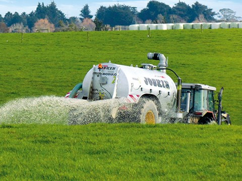

SLURRY TANK
slurry tank is a hole, dam, or circular concrete structure where farmers gather all their animal waste together with other unusable organic matter, such as hay and water run off from washing down dairies, stables, and barns, in order to convert it over a lengthy period of time into fertilizer that can eventually be reused on their lands to fertilize crops.
The decomposition of this waste material produces deadly gases, making slurry pits potentially lethal without precautions such as the use of a breathing apparatus with air supply.